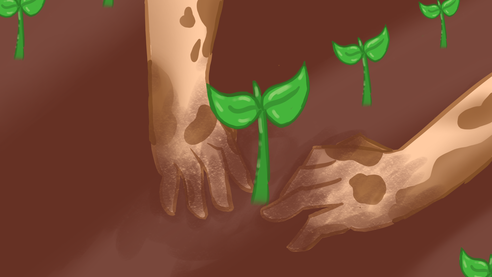
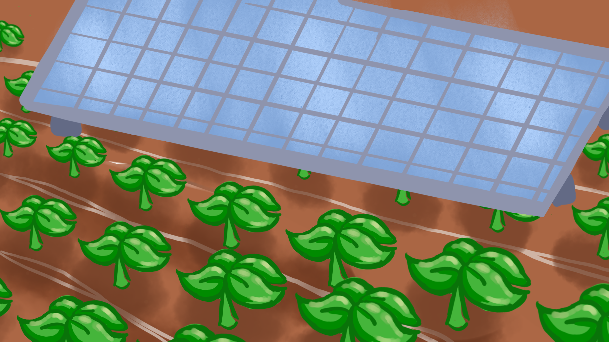
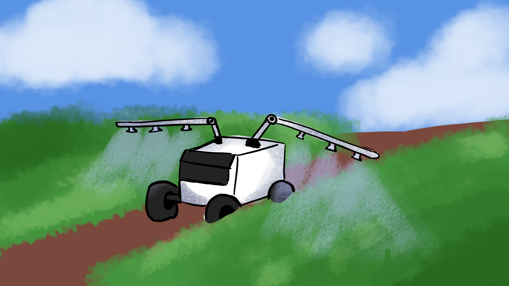

O agro sustentável busca equilibrar produtividade, preservação ambiental e qualidade de vida para as futuras gerações.
A agricultura sustentável desempenha um papel fundamental no planeta, ela nos permite aumentar a produtividade sem causar danos significativos ao meio ambiente.
As inovações tecnológicas permitem o uso mais eficiente dos recursos naturais. Ferramentas como sensores, drones e sistemas de monitoramento auxiliam os agricultores a controlar a irrigação, o uso de fertilizantes e o combate a pragas de forma precisa.



Uso racional dos recursos hídricos.
Redução da erosão e aumento da fertilidade.
Diminuição da emissão de gases poluentes.
Mais segurança alimentar para a população.
Secas, enchentes e eventos extremos afetam a produção.
Expansão agrícola sem planejamento ambiental.
Impacto na biodiversidade e na qualidade do solo.
Protege o solo e reduz a erosão.
Melhora a fertilidade e diminui as pragas.
Uso de drones, sensores e inteligência artificial.
Uso de energia solar e biomassa nas propriedades.
Construir um futuro em que o desenvolvimento econômico caminhe lado a lado com o meio ambiente.